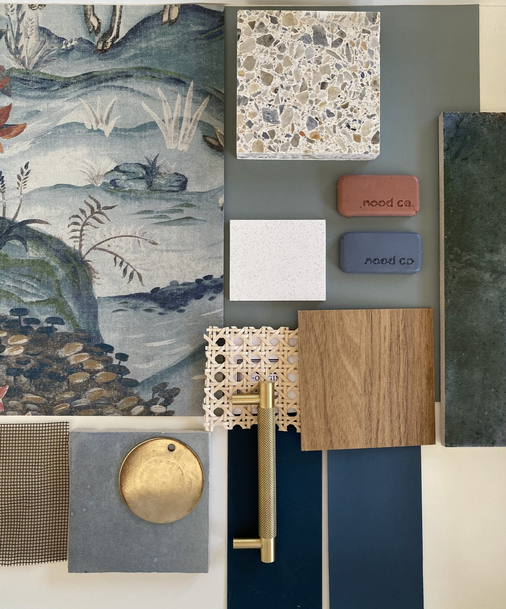
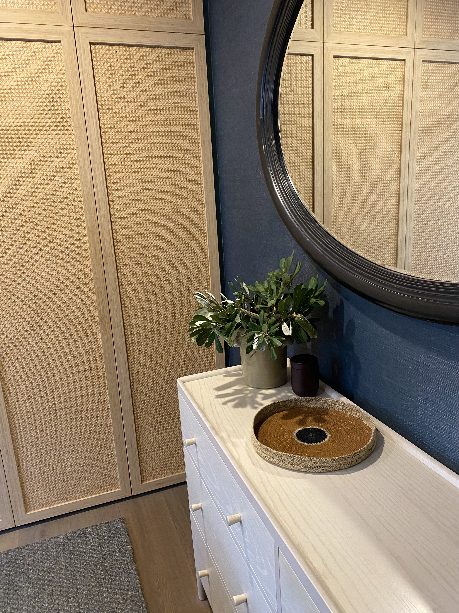

What the question is really asking
When people ask whether their project is "big enough," they usually mean one of two things: they are worried about cost, or they are worried about taking up a professional's time unnecessarily. Both are understandable. Neither tends to hold up.
Interior design input is not reserved for whole-home renovations or clients with unlimited budgets. It is most useful precisely at the point when someone is about to spend money on their home, because that is when good guidance makes the biggest difference.

The cost of getting it wrong
Consider the furniture that looked right in the showroom but reads as too small in the room. The paint colour chosen from a sample card that looks entirely different under your home's light. The kitchen layout that functions beautifully in theory but proves frustrating in practice. The bedroom that has good bones but never quite comes together.
These are not hypothetical mistakes. They are the situations clients describe when they come to us after the fact, having already spent the money. The sofa cannot be returned. The paint has been applied throughout. The decision has been made.
Design input is most valuable before these commitments, not after.
Early engagement as a cost-saving measure
A designer's role is not only to make spaces look better. It is to help clients make better decisions, in the right order, with a clear understanding of what each decision costs and what it achieves.
An Initial Consultation can save multiples of that in poor purchasing decisions. A Room Edit can reframe an entire space without requiring new furniture at all. The value of professional guidance is not measured in what it costs, but in what it prevents.
When the timing is right
The best time to engage a designer is before you start buying. Before the renovation scope is finalised. Before the paint colours are chosen. Before the furniture order is placed. The earlier you seek input, the more flexibility there is to shape the outcome.
This does not mean the project needs to be large. A single room, approached with care and intention, is a worthwhile project. A home that is lived in and loved deserves the same consideration as a brand-new build.
